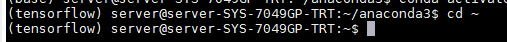
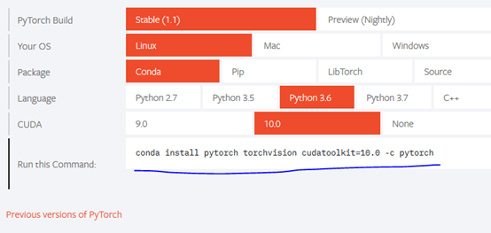
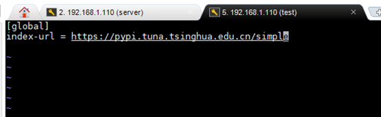

第3章 Anaconda虚拟环境配置
服务器公用环境中安装了Anaconda2019.03(python3.7), 无特殊情况下，我们跑程序必须都在虚拟环境中进行。
可自行安装虚拟环境，然后在该虚拟环境中安装自己需要的python包，具体建立方法见anaconda常用命令。
3.1 虚拟环境相关anaconda命令
进入虚拟环境： source/conda activate env_name
eg: 进入名为tensorflow的虚拟环境,当前面出现(tensorflow)说明虚拟环境激活成功。

退出虚拟环境： source deactivate env_name
conda deactivate
查看当前可用虚拟环境： conda env list/conda info -e
查看当前虚拟环境中安装python包： conda list
新建虚拟环境： conda create -n env_name python=x.x(3.6,2.7等版本)
其中的env_name 为自定义虚拟环境的名称，无特定命令要求。注意：新建的虚拟环境目录存在于个人用户文件夹下，具体目录为：~/.conda/env
3.2 虚拟环境中python包安装/卸载方法(linux环境下)
Python包管理工具有很多，常用的有conda 和pip两个包管理工具，强烈推荐使用conda进行包管理，因为其安装简单，很多安装包打包一起下载，非常方便。
3.2.1 Tensorflow
安装指定版本的tensorflow-gpu: conda install tensorflow-gpu==x.x.x 该操作会打包安装cuda、cudnn、tensorflow、tensorborad等安装包，针对利用pip安装操作复杂情况做了很好的优化，一步到位！
检测tensorflow是否使用GPU进行计算：进入python解释器（输入python即可），然后输入以下代码：
import tensorflow as tf
sess = tf.Session(config=tf.ConfigProto(log_device_placement=True))
若日志信息有GPU信息，则表示使用了！
3.2.2 keras
安装指定版本的keras-gpu(tensorflow后端) ，因为keras以tensorflow或Theano为后端，此处以tensorflow后端为例。在安装好特定版本的tensorflow-gpu的基础之上，输入： conda install keras-gpu==x.x.x
测试keras是否安装成功与是否使用GPU计算，与tensorflow基本相同，此处不再赘述！
3.2.3 pytorch
安装指定版本的pytorch: 安装pytorch很简单，登陆pytorch官方网站(https://pytorch.org/) ,主页有针对不同平台、不同python版本、不同pytorch版本以及不同包管理工具的命令生成小工具，很方便，很简单！但首先还是需要安装一些基本的包，如cuda, cudnn，numpy等:
Conda 安装cuda: conda install cudatoolkit=x.x.x
Conda 安装cudnn conda install cudnn=x.x.x
Conda 安装 numpy conda install numpy=x.x.x 
检测是否成功安装pytorch，在虚拟环境中进入python解释器输入：
import torch
import torchvision
不报错证明安装成功！
检测pytorch是否可使用GPU：
print(torch.cuda.is_available())
返回True即为可用GPU进行计算！
安装其他需要的安装包也类似： conda install xxx==x.x.x
注意：如果需要卸载相应安装包，由于安装深度学习框架相关包时是打包下载安装，因为卸载一个的同时，会将所有打包下载的相关依赖均卸载。其他一般的python包没有这个问题。
卸载包： Conda remove xxx
Conda 安装包下载源设置：
当前由于版权问题，绝大多数国内源，如清华源，中科大源均于2019.5.4后均停止服务，后期恢复日期未定！后期若开发，再补充设置国内源方法。
Pip 安装方法：此处不做说明，如果有兴趣可以自行查阅安装方法，其实都差不多。此处只给大家提供设置pip国内源的方法，加速包下载过程，避免出现安装包下载缓慢的情况（默认情况下下载源在境外！）
3.3 更改使用pip源
3.3.1 清华源
Pip添加清华源（目前仍可用）：
临时使用：
pip install -i https://pypi.tuna.tsinghua.edu.cn/simple some-package
注意，simple 不能少, 是 https 而不是 http
设为默认(推荐)
升级 pip 到最新的版本 (>=10.0.0) 后进行配置：
pip install pip -U
pip config set global.index-url https://pypi.tuna.tsinghua.edu.cn/simple
如果 pip 默认源的网络连接较差，临时使用本镜像站来升级 pip：
pip install -i https://pypi.tuna.tsinghua.edu.cn/simple pip -U
上述操作会在用户根目录下生成一个配置文件，该文件位置为：/.config/pip/pip.conf
利用vim查看该文件：
vim ~/.config/pip/pip.conf
现如下图所示说明配置成功！从此利用pip安装包速度起飞！！ 
3.3.2 哈工大源（推荐）
在学校使用下载非常快。
pypi如果清华的源出现timeout 可以考虑哈工大的源。每日更新，很频繁。
【链接】哈尔滨工业大学开源镜像站 http://mirrors.hit.edu.cn/#/home
永久：pip config set global.index-url https://mirrors.hit.edu.cn/pypi/web/simple
临时：pip install some_package -i https://mirrors.hit.edu.cn/pypi/web/simple